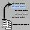

The "Paste Above" function pastes the currently copied (and contiguous) subtrees immediately above / before the currently selected subtree, in the same order as they were in the location from which they were copied. It is activated in the "Edit" menu or by the button

.